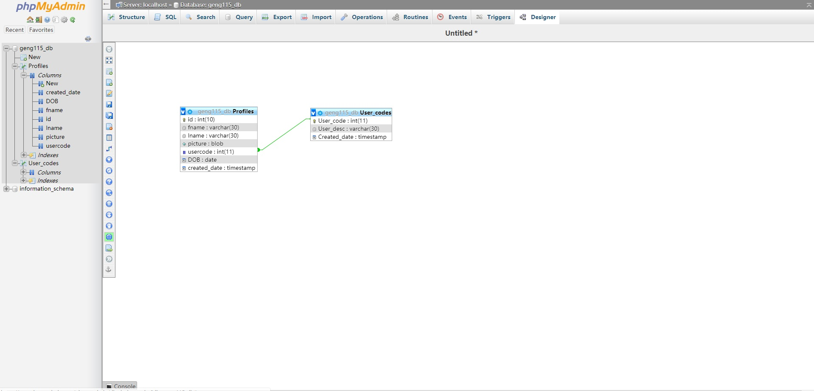

Section B (MySQL Database)
1- Do all instructions in Setting up MySQL,
and Setting up MySQL2 slides from lectures 3 and 5,
create the two tables (Profile and User_codeS) and the relationship between them.
Name the database studentid_db (e.g. alkhate_db). Once you are done,
take a full screen shot for the designer
Figure 1:
